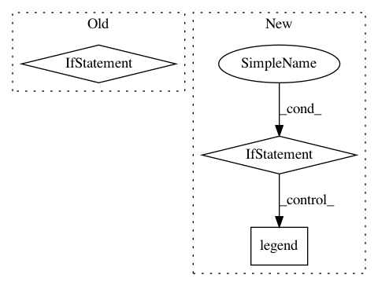

b65eb6ee056cd4825538651f258dc7cca96aaf52,pandastable/plotting.py,PlotViewer,_doplot,#PlotViewer#Any#Any#Any#Any#Any#,297
Before Change
rows = int(round(np.sqrt(len(data.columns)),0))
if len(data.columns) == 1:
kwargs["subplots"] = 0
if kind == "pie":
kwargs["subplots"] = True
if subplots == 0:
layout = None
else:
layout=(rows,-1)
After Change
x = cols[0]
y = cols[1]
axs = data.plot(x,y,ax=ax,kind="hexbin",gridsize=20,**kwargs)
elif kind == "pie":
if kwargs["legend"] == True:
lbls=None
else:
lbls = list(data.index)
axs = data.plot(ax=ax,kind="pie", labels=lbls, layout=layout,
autopct="%1.1f%%", subplots=True, **kwargs)
if lbls == None:
axs[0].legend(labels=data.index)
else:
axs = data.plot(ax=ax, layout=layout, **kwargs)
return axs
In pattern: SUPERPATTERN
Frequency: 3
Non-data size: 3
Instances
Project Name: dmnfarrell/pandastable
Commit Name: b65eb6ee056cd4825538651f258dc7cca96aaf52
Time: 2015-11-15
Author: farrell.damien@gmail.com
File Name: pandastable/plotting.py
Class Name: PlotViewer
Method Name: _doplot
Project Name: theislab/scanpy
Commit Name: 4a5fa13c11c87ba869a21b067ac65e5f6ed681f0
Time: 2017-02-10
Author: f.alex.wolf@gmx.de
File Name: scanpy/plotting.py
Class Name:
Method Name: plot_tool
Project Name: BindsNET/bindsnet
Commit Name: a802d31210ed262b8159b656b256bdacf10c9d61
Time: 2020-05-11
Author: hananel@hazan.org.il
File Name: bindsnet/analysis/plotting.py
Class Name:
Method Name: plot_performance